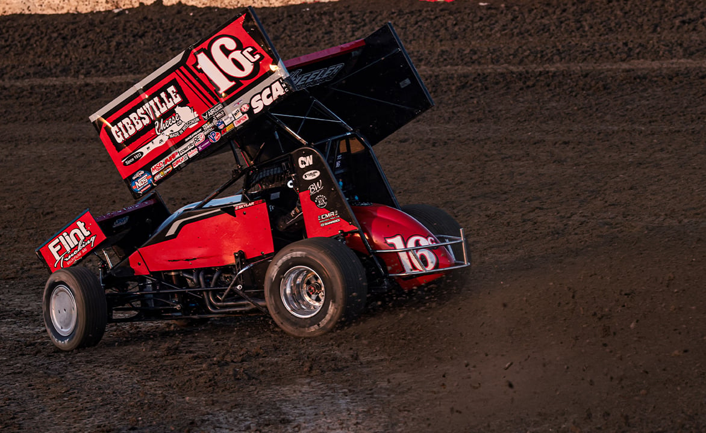

Rees Moran to Run Full-Time World of Outlaws Rookie Campaign With Greg Wheeler Motorsports in 2027
The 19-year-old from Tulsa, Oklahoma, is the first announced rookie contender for the 2027 Kevin Gobrecht Rookie of the Year award. World of Outlaws said the team’s first season on the tour was split between Scotty Thiel and Skylar Gee in the No. 16C.

Rees Moran will run a full-time rookie campaign with Greg Wheeler Motorsports in the World of Outlaws NOS Energy Drink Sprint Car Series in 2027, the series announced Nov. 17. The 19-year-old from Tulsa, Oklahoma, is the first announced rookie contender for the 2027 Kevin Gobrecht Rookie of the Year presented by Five Star Bodies award, according to World of Outlaws.
Wheeler’s team completed its first World of Outlaws season in 2026, with Scotty Thiel driving through late April before Skylar Gee took over the No. 16C and finished the year, World of Outlaws said. Moran said he first met Wheeler during a rainout this year. “I actually met Greg, I think, during a rainout, and I was just walking around, and he was there, so I went and talked to him,” Moran said. “Greg’s a really great dude, and I’m really looking forward to it. He’s one of the nicest guys in the pit area, so to have someone like him wanting me to drive his race car is pretty surreal.”
Moran spent much of 2026 in a 410 sprint car, World of Outlaws said. He drove Johnny Herrera’s No. 45X through the Knoxville Nationals, won a local feature at Huset’s Speedway and recorded four World of Outlaws top-10 finishes, three of them at I-55 Federated Auto Parts Raceway Park. He closed the year in his own No. 22M and won a POWRi race at Texas Motor Speedway Dirt Track.
“It was my first year running for another car, so that was a little bit of a learning curve for me,” Moran said. “I’ve always just ran my family car.” He said winning in Herrera’s car and then in the family car to close the season “definitely does a bunch for my confidence going into next season.” His rookie World of Outlaws campaign begins Feb. 10-13 at Volusia Speedway Park’s Federated Auto Parts DIRTcar Nationals in Barberville, Florida, according to the series.